鋼筋混凝土｜RC-U1-1｜影片講義
RC 梁彎矩強度：兩條線、同一個未知數
影片長度 8:35 ・ 13 章 ・ 29 段旁白 ・ 例題：b = 30、d = 55 cm、f'c = 280、fy = 4200、5-D25
單筋、雙筋、T 形梁、設計題，整個單元只在算兩條線：力的平衡線與應變幾何線，兩條線共用同一個未知數 \(c\)。
黑板用色：紅＝混凝土壓力 \(C\)、頂端 0.003；藍＝鋼筋拉力 \(T\)、\(\varepsilon_t\)；橘＝中性軸；黃框＝重點。下文公式沿用同色。
開場
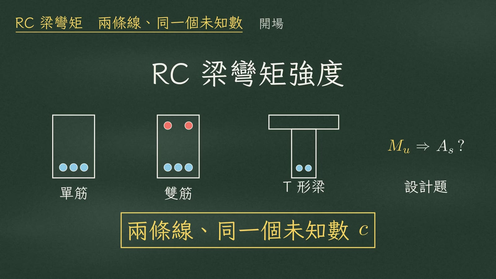
四種題型：單筋、雙筋、T 形梁、設計題（\(M_u \Rightarrow A_s\)）影片 0:18
RC 梁的彎矩題型看起來很多：單筋、雙筋、T 形梁，還有設計題。但其實整個單元只在算兩條線，而且兩條線共用同一個未知數。我們就從這兩條線出發，把所有梁型串起來。
① 兩條線、同一個未知數
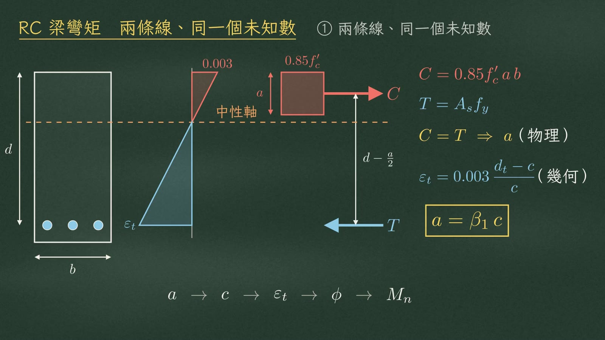
左：應變幾何線；右：力的平衡線；黃框 \(a=\beta_1 c\) 把兩者鎖在一起，底列為解題順序影片 1:09
第一條線是力的平衡線。混凝土壓力 \(C\) 等於 \(0.85f'_c\) 乘 \(a\) 乘 \(b\)，鋼筋拉力 \(T\) 等於 \(A_s\) 乘 \(f_y\)。令 \(C=T\)，就解出應力塊深度 \(a\)。這是物理問題。
$$ {\color{#c8483f}C = 0.85f'_c\,a\,b} \;=\; {\color{#3a7fb3}T = A_s f_y} \quad\Rightarrow\quad a \;\;(\text{物理}) $$
第二條線是應變幾何線。平面保持平面，應變呈直線，頂端混凝土壓碎應變固定是 0.003。用相似三角形，就得到最外層鋼筋的應變 \(\varepsilon_t\)。這是幾何問題。
$$ {\color{#3a7fb3}\varepsilon_t} = {\color{#c8483f}0.003}\,\frac{d_t-c}{c} \quad (\text{幾何}) $$
兩條線靠中性軸深度 \(c\) 鎖在一起：
$$ a = \beta_1\,c $$
解題順序永遠是力平衡求 \(a\) → 換算 \(c\) → 回到幾何求 \(\varepsilon_t\) → 查 \(\phi\) → 最後取矩得 \(M_n\)。
$$ a \;\to\; c \;\to\; \varepsilon_t \;\to\; \phi \;\to\; M_n $$
② 等效應力塊
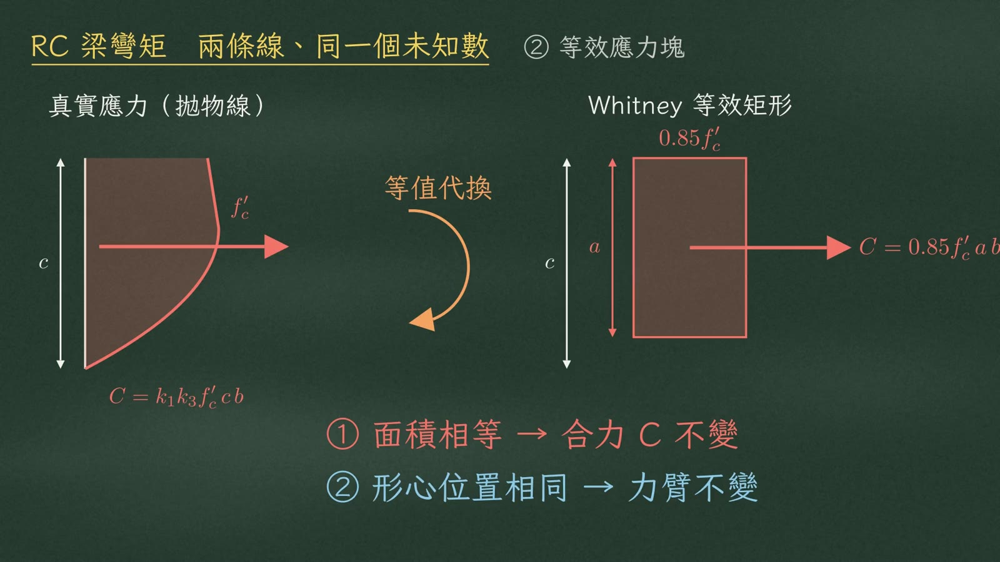
真實應力（拋物線，\(C=k_1k_3f'_c\,c\,b\)）→ Whitney 等效矩形（高 \(0.85f'_c\)、深 \(a\)）影片 1:28
等效應力塊怎麼來？真實的壓應力是一條拋物線，Whitney 用一個矩形取代它，條件只有兩個：
| 條件 | 結果 |
|---|
| ① 面積相等 | 合力 \(C\) 不變 |
| ② 形心位置相同 | 力臂不變 |
矩形高度取 \(0.85f'_c\)，深度就是 \(a\)。
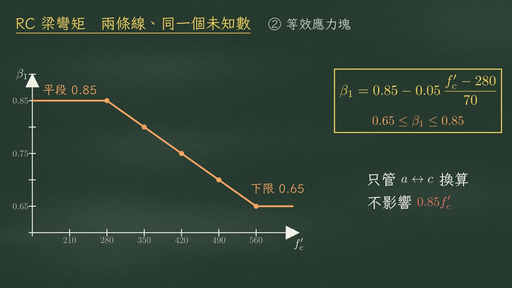
\(\beta_1\)–\(f'_c\) 折線：280 以下平段 0.85，每增 70 減 0.05，560 起下限 0.65影片 1:44
\(\beta_1\) 只負責 \(a\) 和 \(c\) 的換算。\(f'_c\) 280 以下取 0.85，之後每增加 70，就減 0.05，最低 0.65。
$$ \beta_1 = 0.85 - 0.05\,\frac{f'_c-280}{70},\qquad 0.65 \le \beta_1 \le 0.85 $$
別混淆兩個 0.85\(\beta_1\) 只管 \(a \leftrightarrow c\) 換算，它不影響應力塊高度那個 \(0.85f'_c\)。
③ 應變幾何與 \(d_t\)
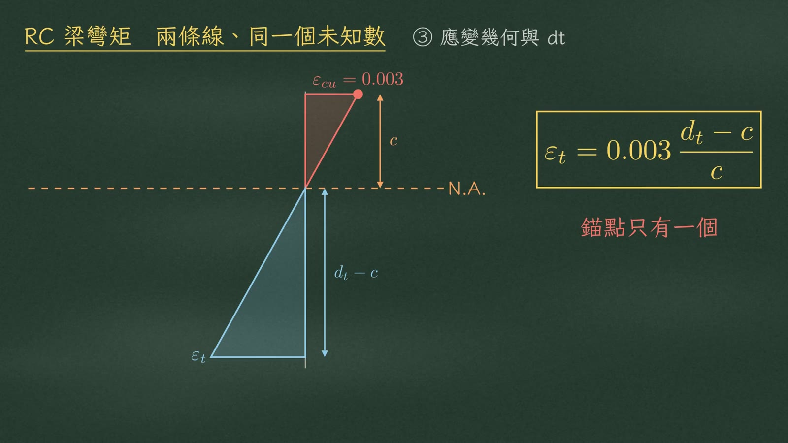
應變圖：唯一錨點是頂端 \(\varepsilon_{cu}=0.003\)；\(c\) 一定，整條應變線就定了影片 1:59
回到應變幾何，式子只有一個：
$$ \varepsilon_t = 0.003\,\frac{d_t-c}{c} $$
錨點只有頂端的 0.003，\(c\) 一決定，整條應變線就決定了。
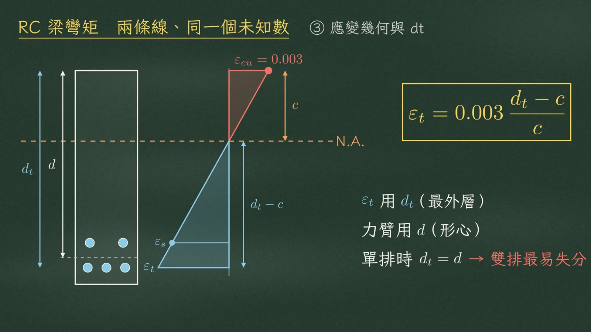
雙排拉力筋：\(d\) 指到兩排形心，\(d_t\) 指到最外層；\(\varepsilon_s\) 與 \(\varepsilon_t\) 是兩個不同的點影片 2:16
| 符號 | 量到哪裡 | 用途 |
|---|
| \(d_t\) | 最外層鋼筋 | 算 \(\varepsilon_t\) |
| \(d\) | 拉力筋形心 | 算力臂 |
陷阱：\(d\) 與 \(d_t\)拉力筋排兩排時，\(d\) 是形心深度、用來算力臂；\(d_t\) 是最外層的深度、用來算 \(\varepsilon_t\)。單排時兩者相等，所以雙排題最容易失分。
④ \(\phi\) 只看 \(\varepsilon_t\)
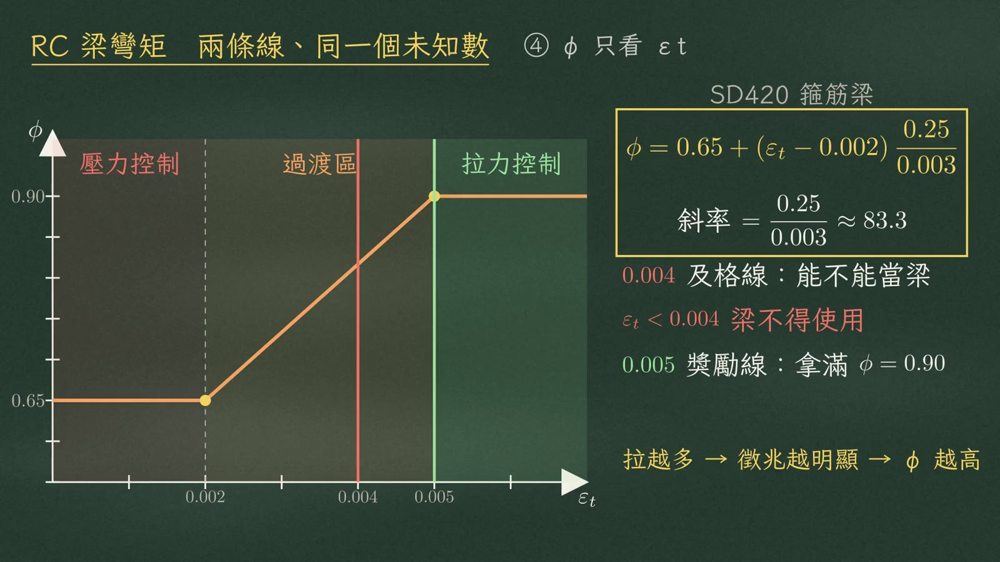
\(\phi\)–\(\varepsilon_t\)（SD420 箍筋梁）：紅線 0.004 及格線、綠線 0.005 獎勵線影片 3:05
\(\phi\) 只看最外層鋼筋拉得夠不夠。
| 區段 | \(\varepsilon_t\) | \(\phi\) |
|---|
| 拉力控制 | \(\ge 0.005\) | 0.9 |
| 過渡區 | 介於兩者之間 | 線性內插 |
| 壓力控制 | \(\le\) 降伏應變（約 0.002） | 0.65（箍筋構材） |
中間是過渡區，線性內插。SD420：
$$ \phi = 0.65 + (\varepsilon_t-0.002)\,\frac{0.25}{0.003},\qquad \text{斜率}=\frac{0.25}{0.003}\approx 83.3 $$
0.004 和 0.005 別混為一談
0.004 是能不能當梁的及格線（\(\varepsilon_t < 0.004\) 梁不得使用）；0.005 是拿滿 \(\phi=0.9\) 的獎勵線。
鋼筋拉得越多，破壞前徵兆越明顯，\(\phi\) 就越高。
例題 五步流水線
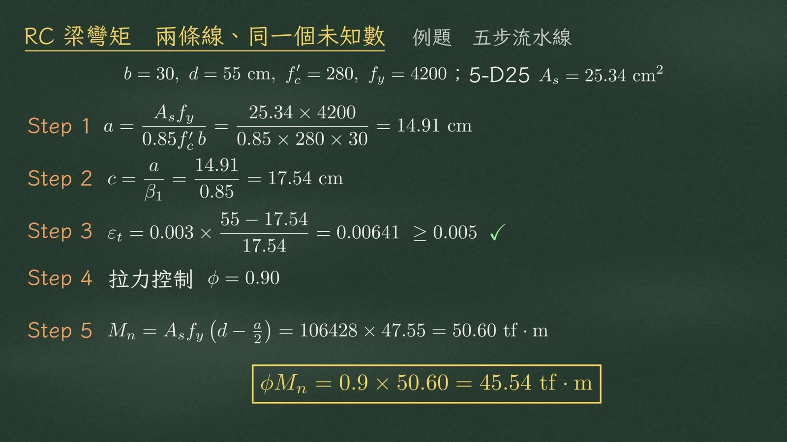
五步全寫完的黑板：Step 1 \(a\) → Step 5 \(\phi M_n\)影片 3:53
用一題走一次五步。梁寬 30、有效深度 55 cm，\(f'_c=280\)，\(f_y=4200\)，5 根 D25，\(A_s=25.34\ \text{cm}^2\)。
| 步驟 | 算式 | 結果 |
|---|
| Step 1 \(a\) | \(a=\dfrac{A_sf_y}{0.85f'_c\,b}=\dfrac{25.34\times4200}{0.85\times280\times30}\) | 14.91 cm |
| Step 2 \(c\) | \(c=\dfrac{a}{\beta_1}=\dfrac{14.91}{0.85}\) | 17.54 cm |
| Step 3 \(\varepsilon_t\) | \(\varepsilon_t=0.003\times\dfrac{55-17.54}{17.54}\) | 0.00641 \(\ge 0.005\) ✓ |
| Step 4 \(\phi\) | 拉力控制 | \(\phi=0.90\) |
| Step 5 \(M_n\) | \(M_n=A_sf_y\left(d-\tfrac a2\right)=106428\times47.55\) | 50.60 \(\text{tf}\cdot\text{m}\) |
$$ \phi M_n = 0.9\times 50.60 = 45.54\ \text{tf}\cdot\text{m} $$
已複算核對\(a=14.906\)、\(c=17.536\)、\(\varepsilon_t=0.00641\)、\(M_n=50.60\)、\(\phi M_n=45.54\ \text{tf}\cdot\text{m}\)，與影片一致。
⑤ 配筋三門檻
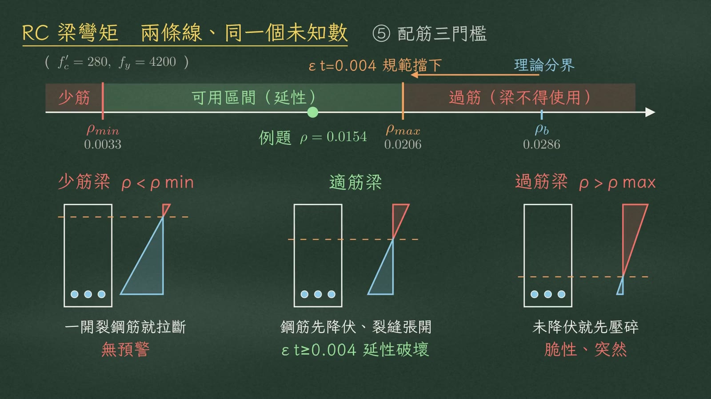
\(\rho\) 數軸（\(f'_c=280,\ f_y=4200\)）與少筋／適筋／過筋三種應變分佈影片 4:42
配筋量有三個門檻。同樣的材料：
| 門檻 | 數值 | 意義 |
|---|
| \(\rho_{min}\) | 0.0033 | 少筋與可用區間的分界 |
| \(\rho_{max}\) | 0.0206 | \(\varepsilon_t=0.004\)，規範擋下 |
| \(\rho_b\) | 0.0286 | 理論分界（平衡破壞） |
剛才那題 \(\rho=0.0154\)，落在中間的可用區間。
| 梁型 | 破壞過程 | 性質 |
|---|
| 少筋梁 \(\rho<\rho_{min}\) | 混凝土一開裂，拉力全轉到鋼筋上，立刻拉斷 | 無預警 |
| 適筋梁 | 鋼筋先降伏、裂縫張開，最後混凝土才壓碎 | 破壞前有明顯徵兆（\(\varepsilon_t\ge0.004\) 延性破壞） |
| 過筋梁 \(\rho>\rho_{max}\) | 鋼筋還沒降伏，混凝土就先壓碎 | 脆性又突然 |
\(\rho_b\) 與 \(\rho_{max}\)\(\rho_b\) 是兩者同時發生的理論分界，但規範不等到 \(\rho_b\)，在 \(\varepsilon_t=0.004\) 的 \(\rho_{max}\) 就擋下來了。
⑥ 雙筋梁
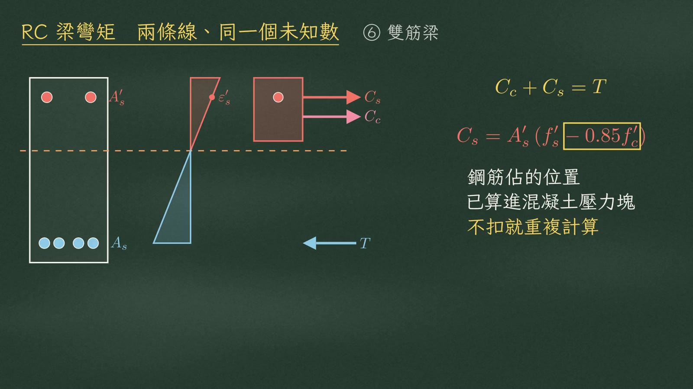
壓力區多了 \(A'_s\)（紅點）；\(C_s\) 式中的 \(-0.85f'_c\) 黃框＝扣掉重複計算影片 5:00
雙筋梁在壓力區多了壓力筋 \(A'_s\)，平衡變成：
$$ C_c + C_s = T,\qquad C_s = A'_s\,(f'_s - 0.85f'_c) $$
\(C_s\) 要扣 \(0.85f'_c\)因為鋼筋佔的位置已經算進混凝土壓力塊，不扣就重複計算了。
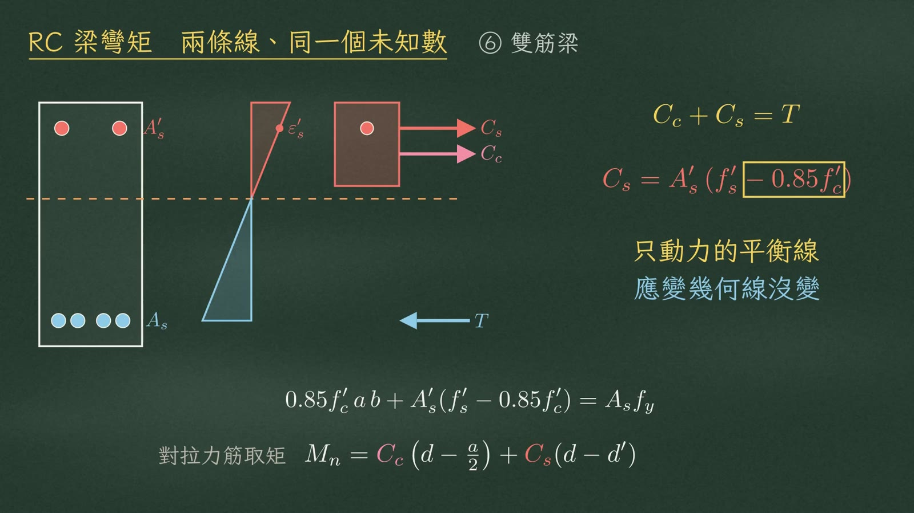
完整平衡式與對拉力筋取矩式；右側「只動力的平衡線，應變幾何線沒變」影片 5:13
$$ 0.85f'_c\,a\,b + A'_s(f'_s-0.85f'_c) = A_sf_y $$
$$ M_n = {\color{#c8483f}C_c}\left(d-\tfrac a2\right) + {\color{#c8483f}C_s}\,(d-d') \quad(\text{對拉力筋取矩}) $$
對拉力筋取矩最省事。
重點雙筋梁動的只有力的平衡線，應變幾何線完全沒變。
⑦ 壓力筋降不降伏
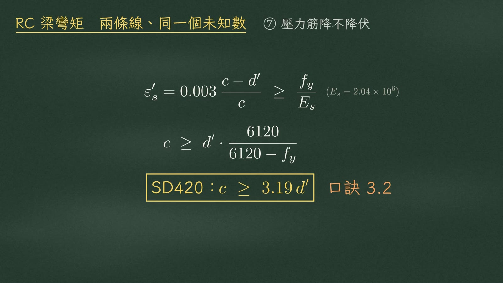
由 \(\varepsilon'_s\ge f_y/E_s\) 推出 \(c\) 的門檻（\(E_s=2.04\times10^6\)）影片 5:34
壓力筋靠近頂端，常常沒降伏，要看 \(c\) 夠不夠深。\(\varepsilon'_s\) 要大於等於 \(f_y/E_s\)，移項得：
$$ \varepsilon'_s = 0.003\,\frac{c-d'}{c} \;\ge\; \frac{f_y}{E_s}
\quad\Longrightarrow\quad c \;\ge\; d'\cdot\frac{6120}{6120-f_y} $$
SD420：\(c \ge 3.19\,d'\)口訣 3.2。
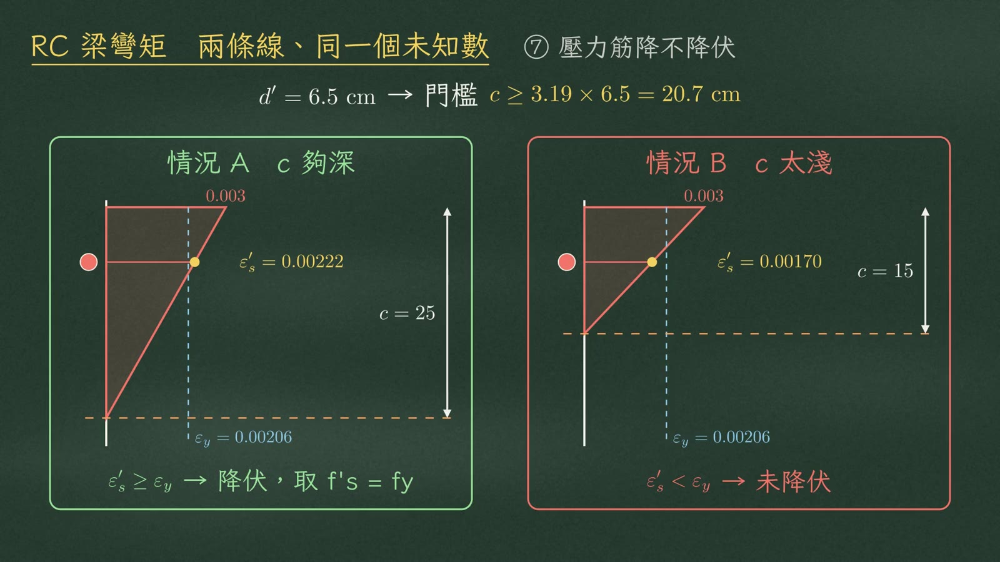
\(d'=6.5\) cm，門檻 \(c\ge3.19\times6.5=20.7\) cm：情況 A（綠）與情況 B（紅）影片 5:50
以 \(d'=6.5\) cm 為例，門檻 20.7。
| 情況 | \(c\) | \(\varepsilon'_s\) | 判定（\(\varepsilon_y=0.00206\)） |
|---|
| A \(c\) 夠深 | 25 | 0.00222 | 超過降伏應變 → 降伏，取 \(f'_s=f_y\) |
| B \(c\) 太淺 | 15 | 0.00170 | \(\varepsilon'_s<\varepsilon_y\) → 未降伏 |
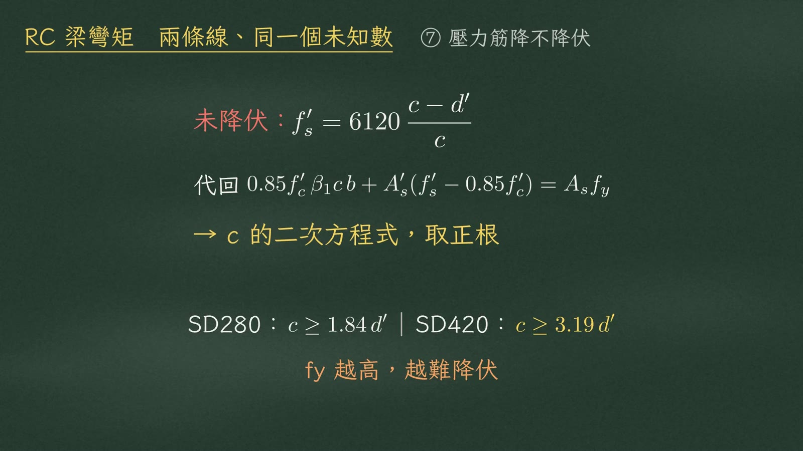
未降伏：\(f'_s\) 代回力平衡 → \(c\) 的二次方程式；SD280 與 SD420 門檻對照影片 6:06
沒降伏就令
$$ f'_s = 6120\,\frac{c-d'}{c} $$
$$ \text{代回}\quad 0.85f'_c\,\beta_1 c\,b + A'_s(f'_s-0.85f'_c) = A_sf_y $$
解 \(c\) 的二次方程式取正根。
| 鋼筋 | 壓力筋降伏門檻 |
|---|
| SD280 | \(c \ge 1.84\,d'\) |
| SD420 | \(c \ge 3.19\,d'\) |
\(f_y\) 越高，越難降伏。
⑧ T 形梁有效翼寬
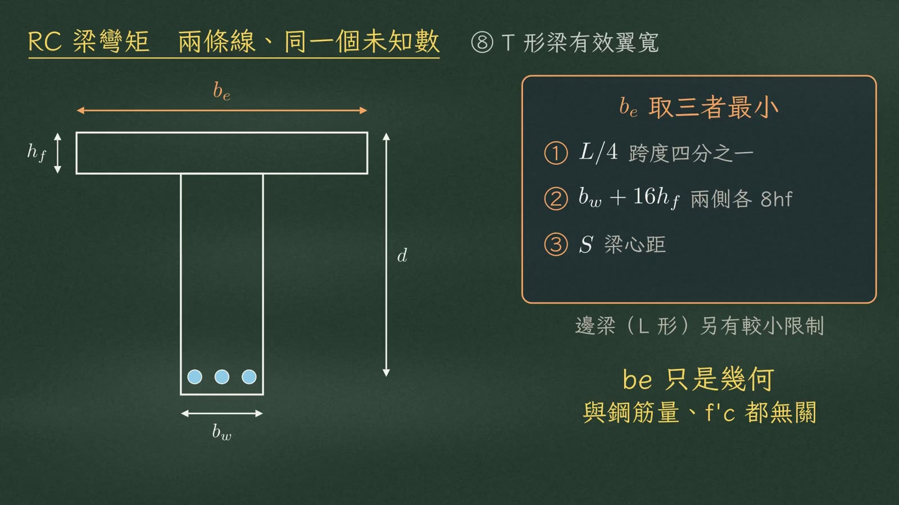
T 形斷面 \(b_e\)、\(h_f\)、\(b_w\)、\(d\)；右框：\(b_e\) 取三者最小影片 6:23
T 形梁先決定多寬的樓版在幫忙。有效翼板寬 \(b_e\) 取三者最小：
$$ b_e = \min\!\left(\frac{L}{4},\;\; b_w+16h_f,\;\; S\right) $$
| 項目 | 說明 |
|---|
| ① \(L/4\) | 跨度四分之一 |
| ② \(b_w+16h_f\) | 腹板寬加十六倍翼板厚（兩側各 \(8h_f\)） |
| ③ \(S\) | 梁心距 |
\(b_e\) 只是幾何\(b_e\) 跟鋼筋量、\(f'_c\) 都無關。（黑板另註：邊梁（L 形）另有較小限制。）
⑨ \(a\) 掉不掉進腹板
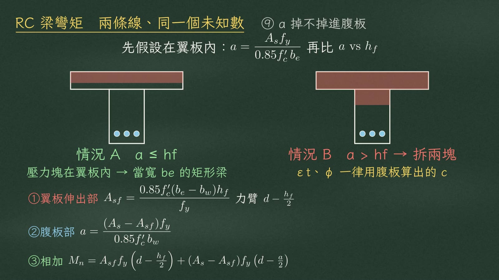
hf 拆兩塊">
情況 A：壓力塊在翼板內（綠）；情況 B：\(a>h_f\) 拆兩塊（紅），下方三式影片 6:58
接著只有一個決策：\(a\) 掉不掉進腹板。先用 \(b=b_e\) 當矩形梁算 \(a\)：
$$ a = \frac{A_sf_y}{0.85f'_c\,b_e}\quad\text{再比 } a \text{ vs } h_f $$
情況 A \(a\le h_f\)：壓力塊整個在翼板內，當寬 \(b_e\) 的矩形梁，直接收工。
情況 B \(a>h_f\)：就拆兩塊。
$$ \text{①翼板伸出部}\quad A_{sf} = \frac{0.85f'_c\,(b_e-b_w)\,h_f}{f_y},\qquad \text{力臂 } d-\frac{h_f}{2} $$
$$ \text{②腹板部}\quad a = \frac{(A_s-A_{sf})\,f_y}{0.85f'_c\,b_w} $$
$$ \text{③相加}\quad M_n = A_{sf}f_y\left(d-\frac{h_f}{2}\right) + (A_s-A_{sf})f_y\left(d-\frac a2\right) $$
剩下的鋼筋配寬 \(b_w\) 的矩形梁重算 \(a\)。
情況 B 的 \(\varepsilon_t\)、\(\phi\)一律用腹板算出的 \(c\)。
⑩ 設計題
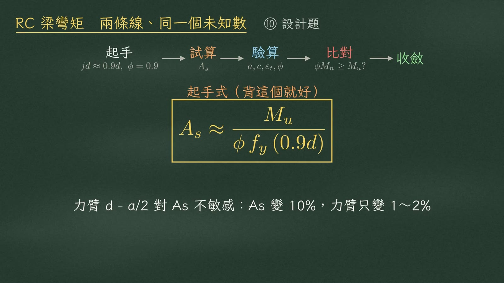
起手（\(jd\approx0.9d,\ \phi=0.9\)）→ 試算 \(A_s\) → 驗算 → 比對 \(\phi M_n\ge M_u\) → 收斂影片 7:16
設計題反過來，已知 \(M_u\) 求 \(A_s\)，就先射箭、後驗靶。起手式：假設力臂 \(0.9d\)、\(\phi=0.9\)：
$$ A_s \approx \frac{M_u}{\phi\,f_y\,(0.9d)} $$
力臂對 \(A_s\) 不敏感，所以第一箭通常很準。（黑板：\(A_s\) 變 10%，力臂只變 1～2%。）
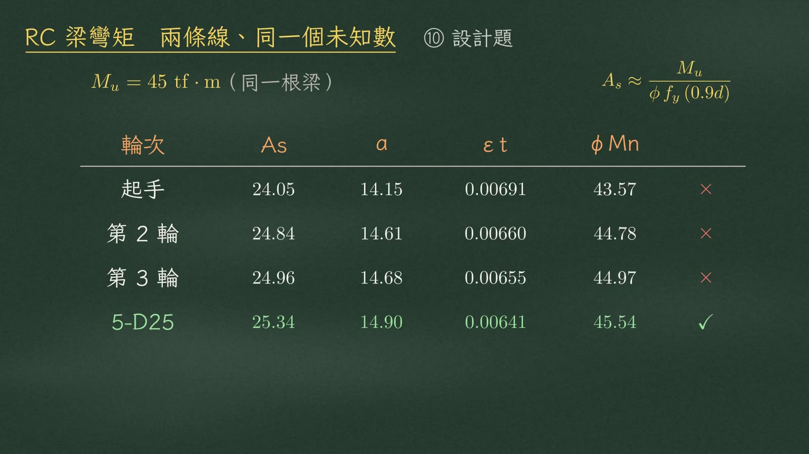
\(M_u=45\ \text{tf}\cdot\text{m}\)、同一根梁的收斂表影片 7:37
以 \(M_u=45\ \text{tf}\cdot\text{m}\)、同一根梁為例：
| 輪次 | \(A_s\) (cm²) | \(a\) (cm) | \(\varepsilon_t\) | \(\phi M_n\) (\(\text{tf}\cdot\text{m}\)) | |
|---|
| 起手 | 24.05 | 14.15 | 0.00691 | 43.57 | ✗ 不夠 |
| 第 2 輪 | 24.84 | 14.61 | 0.00660 | 44.78 | ✗ |
| 第 3 輪 | 24.96 | 14.68 | 0.00655 | 44.97 | ✗ 還差一點 |
| 選 5-D25 | 25.34 | 14.90 | 0.00641 | 45.54 | ✓ 收工 |
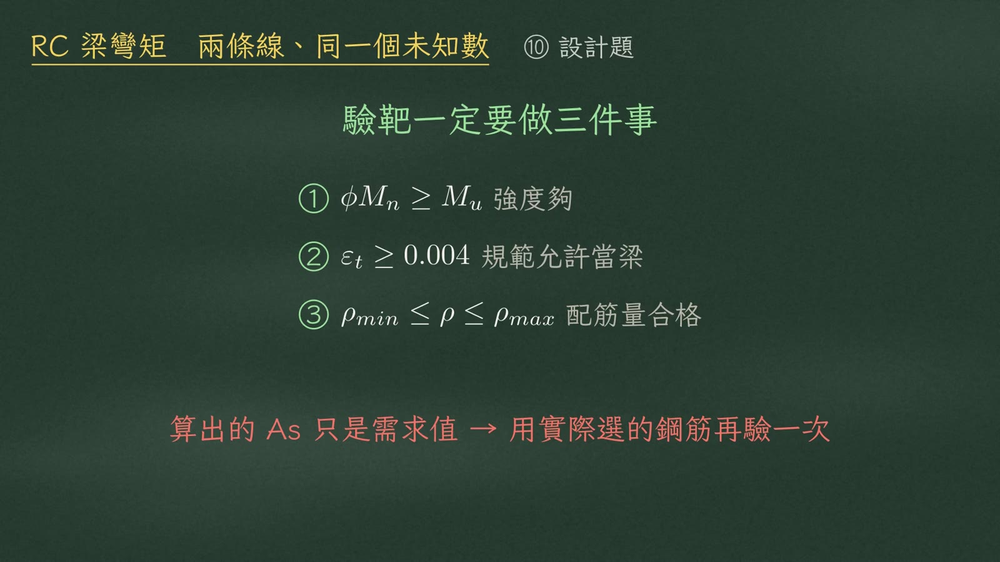
驗靶一定要做三件事；紅字：用實際選的鋼筋再驗一次影片 7:50
驗靶三件事
① \(\phi M_n \ge M_u\)（強度夠）
② \(\varepsilon_t \ge 0.004\)（規範允許當梁）
③ \(\rho_{min}\le\rho\le\rho_{max}\)（配筋量合格）
別忘了算出的 \(A_s\) 只是需求值，要用實際選的鋼筋再驗一次。
⑪ 總結
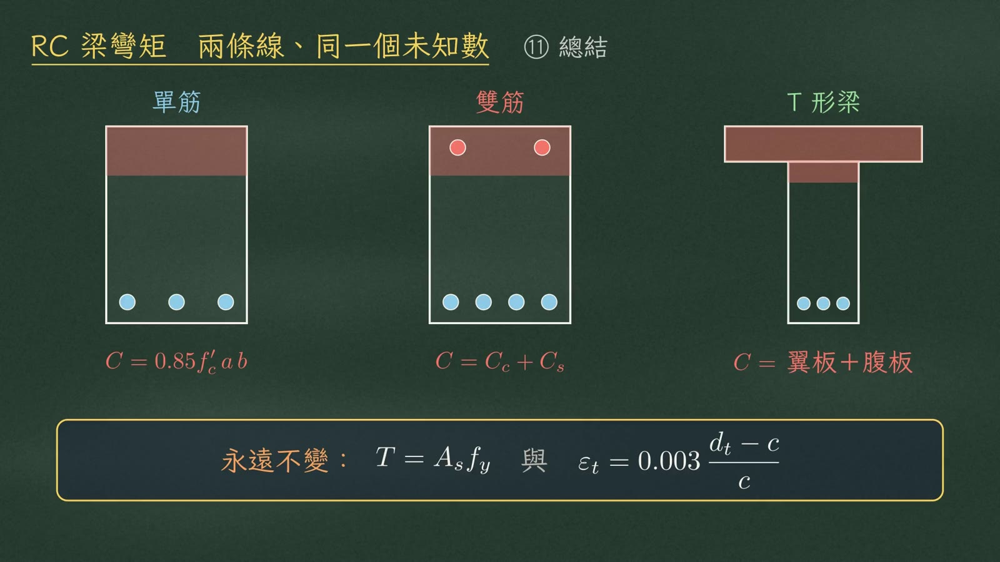
單筋／雙筋／T 形梁：只有壓力區 \(C\) 的寫法不同；下框是永遠不變的兩式影片 8:06
三種梁型放在一起看，變的只有壓力 \(C\) 的寫法：
| 梁型 | 壓力 \(C\) |
|---|
| 單筋 | \(C=0.85f'_c\,a\,b\) |
| 雙筋 | \(C=C_c+C_s\) |
| T 形梁 | \(C=\) 翼板 \(+\) 腹板 |
永遠不變
$$ {\color{#3a7fb3}T = A_sf_y}\qquad\text{與}\qquad {\color{#3a7fb3}\varepsilon_t} = 0.003\,\frac{d_t-c}{c} $$
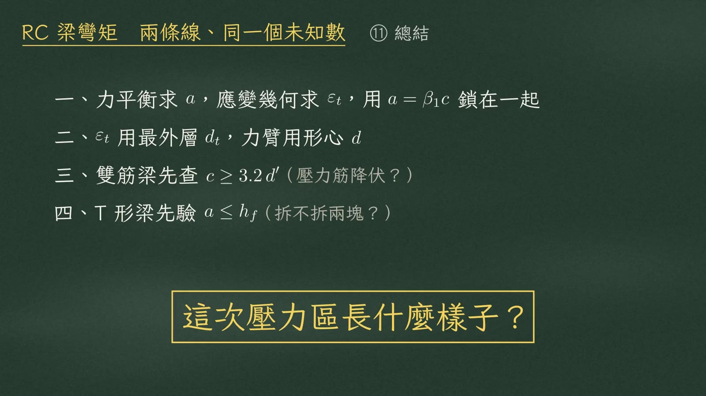
四點總結＋一句話影片 8:34
- 力平衡求 \(a\)，應變幾何求 \(\varepsilon_t\)，用 \(a=\beta_1 c\) 鎖在一起。
- \(\varepsilon_t\) 用最外層 \(d_t\)，力臂用形心 \(d\)。
- 雙筋梁先查 \(c\ge 3.2\,d'\)（壓力筋降伏？）。
- T 形梁先驗 \(a\le h_f\)（拆不拆兩塊？）。
看到新題型，只要問一句這次壓力區長什麼樣子？